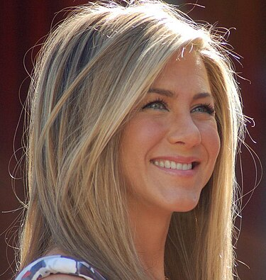
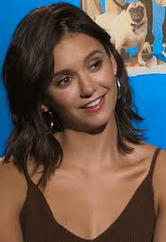

Известни личности
Дженифер
Нина
Дженифер

Биоградфия:
Дженифър Анистън е родена на 11 февруари 1969 г. в Шърман Оукс, район на Лос Анджелис. Баща ѝ, гъркът Янис Анастасакис (Джон Анистън), е актьор, известен с ролята си в сапунения сериал „Дните на нашия живот“.
Той сменя гръцкото си име Анастасакис на по-американски звучащото Анистън. След година, прекарана в Гърция, семейството се връща в САЩ и се установява в Ню Йорк, където баща ѝ печели роля в сапунения сериал „Love of Life“ и по-късно в „Search for Tomorrow“.
През 1985 семейството се премества в Лос Анджелис, където баща ѝ вече се снима в „Дните на нашия живот“.
Родена: 11 февруари 1969 г.
Цитат на Дженифер Анистън:
"Най-прекрасното ухание на света е това на мъжа, когото обичаш"
Филмография
- Мистериозно убийство 2 (2023)
- Приятели: Отново заедно (2021)
- Сутрешен блок (2019)
- Дебеланата (2019)
- Лесна плячка (2013)
Нина

Биоградфия:
Кариерата на Добрев започва като модел и с участия в реклами, а впоследствие започва да се явява и на прослушвания за различни роли в киното и телевизията. Има роли във филмите „Fugitive Pieces“, „Away from Her“, „Never Cry Werewolf“. Участва в телевизионния сериал „Деграси: Следващо поколение“. През 2007 г. се появява в музикалния клип на Уейд Ален-Маркъс и Дейвид Баум. Има роля и във филма на MTV – „The American Mall“. Нина играе главната роля на Елена Гилбърт в свръхестествения сериал „Дневниците на вампира“.
Добрев се снима и в трилъра „Клои“, чиято премиера е на 26 март 2010 г. Филмът има голям търговски успех и става най-печелившия филм на режисьора Атом Егоян. През април 2011 г. Нина е избрана за ролята на Кандис във филма „The Perks of Being a Wallflower“ заедно с Логан Лерман, Ема Уотсън, Пол Ръд и Езра Милър. Снимките започват през май 2011 г. в Питсбърг, Пенсилвания и приключват на 27 юни 2011 г. Премиерата е на 21 септември 2012 г.
През август 2014 г. участва заедно с Джейк Джонсън и Деймън Уейънс в комедията „Нека сме ченгета“. На 6 април 2015 г. Добрев съобщава чрез Инстаграм, че напуска снимките на сериала „Дневниците на вампира“, след приключването на шести сезон. През септември 2015 г. Добрев участва във филма „Arrivals“ в ролята на Изи, заедно с Аса Бътерфилд и Мейси Уилям, филмът по-късно е презаглавен „Departures“ и е планиран да влезе в производство през април 2017 г. . Същата година участва в романтичната комедия „Crash Pad“, чието заснемане започва през есента на 2015 г.
Родена: 9 януари 1989 г.
Цитат на Нина Добрев:
"Въпреки че растете, никога не трябва да преставате да се забавлявате."
Филмография
- Movies
- The Perks of Being a Wallflower - September 21, 2012
- The Roommate - February 4, 2011
- Let's Be Cops - August 13, 2014
- xXx: Return of Xander Cage - January 20, 2017
- Lucky Day - September 13, 2019
- Films
- Chick Fight - November 13, 2020
- Fateful Findings - 2013 (Cameo role)
- The Final Girls - October 9, 2015 (Voice role)
КОМПЮТЪРНИ ВИРУСИ
- Що е компютърен вирус?
- Видове вируси
- Файлови вируси
- Презаписващи вируси
- Резидентни вируси
- Системни вируси
- Boot-sector вирус
- Вирус, нападащи командния интерпретатор
- Драйверни вируси
- Троянски коне
- Разпространение на вирусите
Продажба на лаптопи и таблети
Лаптопи
Процесор: Intel Core i3-1215U (0.9/4.4GHz, 10M); RAM Памет: 8 GB DDR4 3200 MHZ; HDD: 256GB SSD; Видео Карта: Intel UHD
Graphics; Дисплей: 15,6" (39.62cm)
TUF Gaming A15
Процесор: AMD Ryzen 7 6800HS (3.2/4.7GHz, 16M); RAM Памет: 16 GB; HDD: 512GB SSD; Видео Карта: NVIDIA RTX 2050 4GB
GDDR6; Дисплей: 15,6" (39.62cm)
Таблети с 3G/4G/5G модул
Операционна система: iPadOS 16; Дисплей: 12.9" (32.76cm) QSXGA 2732x2048 IPS; Процесор: 8x Apple M2 (3.50 GHz); Вградена
памет: 128 GB
Samsung Galaxy Tab A8 с 4G Модул
Операционна система: Android 11; Дисплей: 10.5" (26.67cm) 1920x1200 IPS; Процесор: 2x Cortex-A75 (2.0 GHz) + 6x Cortex-A55 (2.0
GHz); Вградена памет: 64 GB
Заповядайте при нас!
гр. Варна
ул. "Шипка" 10
© 2024 My Company